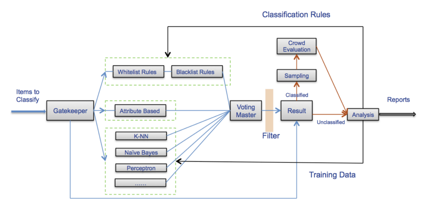

Management
Misc
- Processing Checklist for publicly releasing datasets
Event Auditing
- Events that get flagged for further investigation need to be audited by humans
- Misc
- Terms
- Backlog - amount of events that you have flagged for human investigation.
- Queue Rate - ratio of all events that you’re flagged.
- Capacity - how much you can at most queue in a given time period.
- Example: if you hire 100 human annotators/auditors of events working 8 hours per day, and a single annotation takes 5 minutes, then you can queue around 10K items per day, and that’s your system’s capacity.
- Maintain a stable backlog
- If your queue rate is higher than your capacity, your backlog increases.
- If your queue rate is lower than your capacity, your backlog decreases.
- Have elasticity in your labeling/auditing workforce
- i.e. being able to quickly increase and decrease the size of the workforce as needed.
- Spikes in events (e.g. fraud, new products, etc.) can lead to increased backlog
- Walmart’s system (paper)
- Uses a combination of both expert human analysts and “crowd workers” for product classification
- human experts do regular audits of the crowd-generated labels to ensure their quality
{kind=link}
Project Management Overview
- Misc
- Initiation
- Understand the key stakeholders of the project;
- Understand which data sources are available for the project;
- Evaluate the complexity of the data integration and the expected time effort;
- Define the problem and draw the plan for available solutions;
- Define the due date for the project
- Planning
- Develop the timeline of model development — including where key checkpoints and stakeholders meetings will sit.
- Develop the timeline for data integration, baseline model development and model improvements.
- Evaluate available constraints for project development (for example, explainability of the models, reasonable training time, etc.);
- Leave some room for “creative tasks.”
- It’s very common that new ideas will come up during the project development and having that time planned for some experimentation will be key to set expectations with stakeholders.
- Risk Management
- See The Risk Management Process in Project Management for details on planning and mitigation solutions
- Draw plans to mitigate risks. Examples:
- What happens if one of my data scientists leave the team (due to sickness, voluntary leave, etc.)?
- What happens if we can’t work with the data sources we need to train our model?
- Is there a regulatory risk involving any of the data contained in my data sources?
- This high-level plan should be approved by all stakeholders
- Tasks should be divided up among team members
- See Development Frameworks section
- Execution & Controlling
- Execution is the development of the project and controlling is the constant evaluation of execution vs. the original plan.
- Common tasks
- Keeping track of the timeline vs. planning. Comparing if there are project delays or assessing project risk.
- Keep track of business stakeholder management — particularly if the initial requirements are being met.
- Regular stand ups between technical teams and business stakeholders.
- And of course, development of the model(s) itself.
- Closure
- The project is presented and main conclusions are discussed with the business stakeholders
- Understand if the business goals have been met.
- Discussing the project result — in case of a failed hypothesis, discuss the gain from this new found knowledge.
- Encapsulate relevant documentation and handover the project to the final stakeholder
- Keep in mind the audiences when writing the documentation
- Other developers/data scientists that will need to maintain the solution in the future
- Business users that will use the output in specific use cases.
- Keep in mind the audiences when writing the documentation
Issues
- Scope creep
- Stakeholders said, “I love the work you did on feature X, can you also do that for A, B, C)”. Without further thought or consultation, you agree to work on that.
- Result: It’s too late when you realize that you don’t have time to work on the core feature you planned to deliver. Deadlines get pushed back.
- Tech creep
- Stakeholders may see a new technology that needs to be incorporated as a feature, etc.
- Priority Shift
- New issues keep popping up that take priority over the project
- Tech debt
- You commit to a task (e.g. a new feature for your model, more training data) that should really be in the backlog.
- Result: you hack it together to finish on a deadline
- Lack of communication
- Developers say, “If I deliver on my work on time, why do I need to be in meetings”.
- Result: Project priorities change and team is out-of-sync.
- Result: Stakeholders become disengaged with the project because they aren’t receiving progress updates.
Dashboard Management
Lifespan Factors
- Determine how likely the underlying data sources for your dashboard will change.
- If you know of plans for a schema change, your stakeholder may decide to push the dashboard into the backlog until the changes have been implemented.
- Extend your dashboard lifespan by keeping the data updated.
- Assess if the metrics for the dashboard are main KPIs used across the company and are likely to remain relevant.
- Startups especially may pivot business models and dashboards become outdated quickly. Your time may be better spent on other tasks than creating this dashboard.
- Determine how likely the underlying data sources for your dashboard will change.
Dashboard Literacy
- Create documentation that explains the metric definitions. The best is to add a ‘definitions’ tab to the dashboard or a link to a page with more information.
- Schedule a meeting with potential users of your new dashboard and explain how to interpret the data.
- Better yet, record the meeting for new users to save you time from having to present the same information again.
Onboard New Hires
- Consider onboarding new users to dashboards relevant to them. Often new hires aren’t aware of the dashboards used by their predecessors.
- Create a list of widely used dashboards for new hires to review. This helps familiarize them with the company KPIs and promotes dashboard adoption.
Deprecation Process
Misc
- Notes from Why and How to Deprecate Dashboards
- Example contains py code for Looker SDK
- Dashboard bloat is the effect on an organization when time is wasted finding the relevant visual to answer a question or recreating visuals that already exist.
Write a script to dump all BI metadata into the warehouse
- Get data through SDKs/APIs (e.g. {{looker_sdk}}, {{Domo}}) or APIs (e.g. Tableau Server, PowerBI)
- Examples
- Looker: fetch all dashboards, looks, and users
- Tableau: fetch workbooks, views, and users
- Clean the response by either casting it as a JSON or extracting only specific fields of relevance (like ID, name, created date, user)
- Examples
- Get last access date for each visual
- Write all these outputs into warehouse tables
- Overwrite tables with data dumps (like all visuals), and append data that builds over time (like historical access)
- Example: Looker
- Tables for each visual (dashboards and looks for the Looker example). Call it `looker_dashboard` and `looker_look`
- Table of users. Call it `looker_user`
- Table of historical access (either raw or aggregated to latest access date per visual). Call it `looker_historical_access`
- Set script to run on a schedule (preferrably daily)
Query table to summarize ownership and last access date for each visual
Sometimes, creating the visual doesn’t count as accessing it, so you’ll need to make sure recently created visuals aren’t flagged for deletion.
To alert users via Slack, you’ll need to map their email to a Slack username.
If it’s a table not a view, update this on a schedule.
Can be a dbt model
Example
with history as ( select visual_id, max(access_date) as latest_access_date from looker_historical_access group by visual_id ), dashboards as ( select id as visual_id, name as visual_name, user_id as visual_created_user_id, created_at as visual_created_at, 'dashboard' as type from dashboard ), looks as ( select id as visual_id, name as visual_name, user_id as visual_created_user_id, created_at as visual_created_at, 'look' as type from look ), visuals as( select * from dashboards union all select * from looks ) select v.*, coalesce(h.latest_access_date, v.visual_created_at) as latest_access_date, u.email from visuals as v left join history as h on h.visual_id = left join user as u on v.visual_created_user_id;- Result: one row per visual, when it was created, the user who created it, and the last date it was viewed or edited
Automatically warn users before deprecation, then delete visuals
60 or 90 days as the threshold for “not recent” is recommended
Process
Communicate the reason for deprecating visuals
- Document and communicate the benefits of keeping a clean BI instance to the broader organization
- The purpose is not to delete others’ work; it’s to enable everyone in the company to get insights from data faster.
- See “Dashboard Bloat” above
Create a deprecation Slack channel for automated communication
- Anyone who is a user of the BI tool should be added to this channel.
Give people a week to save the dashboard/visual
Query visuals that haven’t been accessed in X-7 days and send a Slack message.
e.g. Visuals included should be ones unused for 53 days if deleting at 60 days of idle time, or 83 days if deleting at 90 days of idle time.
Example
# Everything below is pseudo-code, with utility methods abstracted away deprecation_days = 60 warn_visuals = get_warehouse_data( # Pseudo method f''' select visual_name, created_by_user from modeled_looker_data where current_date - last_accessed_date = {deprecation_days - 7} ''') slack_message_template = ''' Visual {{visual_name}} created by @{{slack_username}} will be deprecated in 7 days. If this is incorrect, please contact the analytics team. ''' for visual in warn_visuals: send_slack_message(slack_message_template, visual) # Pseudo method
Query visuals that are ready for deletion and delete them programatically
deprecation_days = 60 delete_visuals = get_warehouse_data( # Pseudo method f''' select visual_id from modeled_looker_data where current_date - last_accessed_date >= {deprecation_days} ''') for visual in delete_visuals: visual_id = visual['visual_id'] if visual['type'] == 'look': sdk.delete_look(visual_id) else: sdk.delete_dashboard(visual_id)Trial period: Run the automated process for a few weeks by commenting out the actual deletion to ensure the logic is sound.
Should also be aware of data collection or dbt models that are used for the visual being deprecated. If they aren’t attached to anything else, they can be deleted, too.